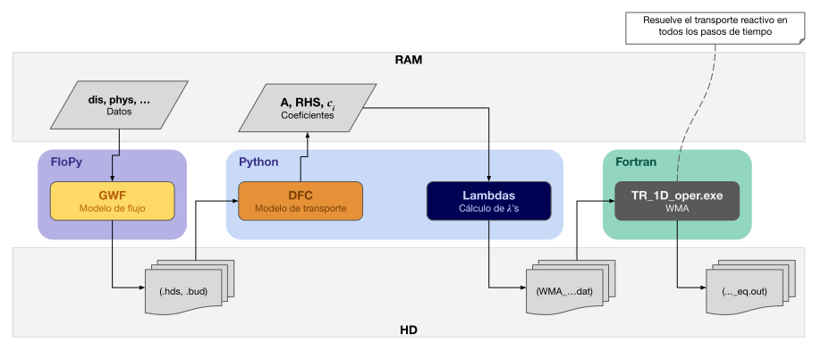
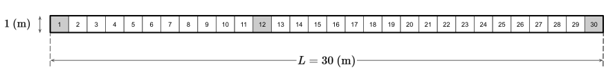

Code
import os
import numpy as np
import pandas as pd
import matplotlib.pyplot as plt
import flopy
import xmf6
import gwf_for_dfc as gwf
import lambdas_dfc_1D as lambdas
import wma_gypsum as wma
linea = 50*chr(0x2015)Descripción.
En esta notebook se modela el flujo y transporte reactivo de la componente \(U = c_1 - c_2\) donde \(c_1 = SO_4^{2-}\) y \(c_2 = Ca^{2+}\). La estrategia de solución consiste en resolver el flujo con GWF, discretizar el transporte con DFC para generar las matrices de coeficientes, calcular las razones de mezcla (\(\lambda\)’s) y finalmente resolver el transporte reactivo con WMA.
RTWMA © 2024-2026 by IGF-UNAM is licensed under CC BY-NC 4.0


El dominio es una columna 1D de longitud \(L = 30 \text{ (m)}\), en dirección \(x\), representando un acuífero de espesor y ancho unitarios, véase figura 1.

Sobre este dominio ocurren los siguientes procesos:
El problema se va a resolver en un periodo de \(40\) días, con un paso de tiempo constante de \(1\) día (\(40\) pasos de tiempo).
En la figura 2 se muestra el proceso de solución de este problema. Obsérvese que se utilizan diferentes programas para cada proceso, los cuales generan información que se guarda en archivos e información que se genera en memoria. Los programas que implementan cada paso están escritos Python y/o en Fortran.

Figura 2. El flujo se resuelve usando GWF a través de FloPy, los datos se proporcionan en diccionarios de Python (dis, tdis, phys, entre otros). GWF genera archivos de salida con los resultados del flujo (.hds, .bud). Esta información es utilizada por DFC para generar los coeficientes de la discretización del modelo de transporte, dichos coeficientes se generan en memoria. El módulo Lambdas calcula las proporciones de mezcla (\(\lambda\)’s) y las almacena en archivos (.dat). Finalmente, el ejecutable TR_1D_oper.exe realiza los cálculos de transporte reactivo usando las proporciones de mezcla y envía los resultados a archivos (.out). En esta última etapa se realizan todos los pasos de tiempo del problema de transporte reactivo para un flujo estacionario.
Para un acuífero 1D, confinado, con conductividad hidráulica \(K_x\) y coeficiente de almacenamiento específico \(S_s\), la ecuación de flujo es:
\[ S_s \frac{\partial h}{\partial t} = \frac{\partial}{\partial x} \left( K_x \frac{\partial h}{\partial x} \right) + q_s(x,t) \]
donde \(q_s(x,t)\) representa fuentes o sumideros volumétricos de agua por unidad de volumen (p. ej. un pozo).
Condiciones de frontera:
\[ \left.\frac{\partial h}{\partial x}\right|_{(0,t)} = 0 \qquad\text{(frontera cerrada / flujo nulo en } x=0\text{)} \]
\[ h(x_{_{L}}, t) = 1.0 \qquad\text{(carga fija en el extremo } x=x_{_{L}}\text{)} \]
Condición inicial:
\[ h(x,t_0) = 1.0 \qquad\text{(m)} \]
La solución numérica se obtiene usando el modelo GWF de MODFLOW 6 en conjunción con FloPy, a continuación se describen los pasos más importantes de la implementación.
import os
import numpy as np
import pandas as pd
import matplotlib.pyplot as plt
import flopy
import xmf6
import gwf_for_dfc as gwf
import lambdas_dfc_1D as lambdas
import wma_gypsum as wma
linea = 50*chr(0x2015)
| Parámetro | Valor | Unidades | Variable |
|---|---|---|---|
| Length of system (rows) | \(30.0\) | m | |
| Number of layers | \(1\) | dis["nlay"] |
|
| Number of rows | \(1\) | dis["nrow"] |
|
| Number of columns | \(30\) | dis["ncol"] |
|
| Column width | \(1.0\) | m | dis["delr"] |
| Row width | \(1.0\) | m | dis["delc"] |
| Top of the model | \(1.0\) | m | dis["top"] |
| Layer bottom elevation (cm) | \(0\) | m | dis["botm"] |
# Discretización espacial
nlay = 1
nrow = 1
ncol = 30
delr = 1.0
delc = 1.0
top = 1.0
botm = 0.0
dis = {
'units' : "meters",
'nlay': nlay,
'nrow': nrow,
'ncol': ncol,
'delr': delr,
'delc': delc,
'top' : top,
'botm': botm
}
xmf6.nice_print(dis, "Spatial discretization")Spatial discretization ―――――――――――――――――――――― units = meters nlay = 1 nrow = 1 ncol = 30 delr = 1.0 delc = 1.0 top = 1.0 botm = 0.0 ――――――――――――――――――――――
El problema se resuelve en un periodo de \(40\) días con un paso de tiempo constante de \(1\) día (\(40\) pasos de tiempo). Sin embargo, debido a que el flujo se mantiene constante durante toda la simulación, se utiliza un solo paso de tiempo de \(40\) días para resolver el flujo.
| Parámetro | Valor | Unidades | Variable |
|---|---|---|---|
| Number of stress periods (NPER) | \(1\) | tdis["nper"] |
|
| Total time | \(40\) | days | tdis["perioddata"][0][0] |
| Number of time steps (NSTP) | \(1\) | tdis["perioddata"][0][1] |
|
| Multiplier (TSMULT) | \(1\) | tdis["perioddata"][0][2] |
# Discretización del tiempo para el flujo
tdis = {
'units': "days",
'nper' : 1,
'perioddata': [(40.0, 1, 1.0)] #PERLEN, NSTP, TSMULT
}
xmf6.nice_print(tdis, "Time discretization (flow)")Time discretization (flow) ―――――――――――――――――――――――――― units = days nper = 1 perioddata = ―― data array ―― = (40.0, 1, 1.0) ――――――――――――――――――――――――――
Los parámetros necesarios para esta simulación se muestran en la siguiente tabla.
| Parámetro | Símbolo | Valor | Unidades | Variable |
|---|---|---|---|---|
| Initial head | \(h(x, t_0)\) | \(1.0\) | m | phys["initial_head"] |
| Head boundary condition (type I) | \(h({x_{_{L}}, t})\) | 1.0 | m | phys["bc_head_t1"] |
| Hydraulic conductivity | \(K_x\) | \(1.0\) | m d\(^{-1}\) | phys["hydraulic_conductivity"] |
| Specific discharge | \(q_s\) | \(0.2\) | m d\(^{-1}\) | phys["specific_discharge"] |
| Source concentration | \(U_s\) | – | unitless | phys["source_concentration"][0] |
| Well inyection | \(q_s U_s\) | – | m d\(^{-1}\) | phys["well"] |
| Porosity | \(\theta\) | \(0.5\) | unitless | phys["porosity"] |
| Initial concentration | \(U(x, t_0)\) | – | unitless | phys["initial_concentration"] |
| Initial concentration pulse | \(U(x_{_{12}}, t_0)\) | – | unitless | phys["initial_concentration"][11] |
| Concentration boundary condition (type I) | \(U(x_{_{1}}, t)\) | – | unitless | phys["bc_conc_t1"][0] |
| Longitudinal Dispersivity | \(\alpha_L\) | \(0.2\) | m | phys["longitudinal_dispersivity"] |
| Dispersion coefficient | \(D_{xx}\) | \(0.2\) | m\(^{2}\) d\(^{-1}\) | phys["dispersion_coefficient"] |
donde:
# Arreglo para la condición inicial de c1
c1_ini = np.full((nlay,nrow,ncol), 1.0000329) # En todo el dominio
c1_ini[0, 0, 11] = 200.0 # Pulso en x_L
# Arreglo para la condición inicial de c2
c2_ini = np.full((nlay,nrow,ncol), 3.294e-5) # En todo el dominio
c2_ini[0, 0, 11] = 1.647e-7 # Pulso en x_L
# Arreglo para la condición inicial de U
U_ini = c1_ini - c2_ini # En todo el dominio
U_ini[0, 0, 11] = c1_ini[0, 0, 11] - c2_ini[0, 0, 11] # Pulso en x_L
print("Array info: U")
xmf6.info_array(U_ini)
U_s = c1_ini[0, 0, 0] - c2_ini[0, 0, 0]
phys = dict(
initial_head = 1.0,
bc_head_t1 = [("CHD-1" , [(0, 0, dis['ncol'] - 1), 1.0])],
hydraulic_conductivity = 1.0,
specific_discharge = 0.2,
source_concentration = U_s,
porosity = 0.5,
initial_concentration = U_ini,
bc_conc_t1 = [("CNC-1", [(0, 0, 0), U_s])],
longitudinal_dispersivity = 0.2,
dispersion_coefficient = 0.2,
decay_rate = 0.0,
)
# Agregamos la información del pozo
q = phys["specific_discharge"] * dis['delc'] * dis['delr'] * dis['top']
phys["well"] = [("WEL-1", "AUX", "CONCENTRATION"), ((0, 0, 0), q, phys["source_concentration"])]
xmf6.nice_print(phys, "Physical parameters")Array info: U tipo : <class 'numpy.ndarray'> dtype : float64 dim : 3 shape : (1, 1, 30) size(bytes) : 8 size(elements) : 30 Physical parameters ――――――――――――――――――― initial_head = 1.0 bc_head_t1 = ―― data array ―― = ('CHD-1', [(0, 0, 29), 1.0]) hydraulic_conductivity = 1.0 specific_discharge = 0.2 source_concentration = 0.9999999599999999 porosity = 0.5 initial_concentration = ―― data array ―― = [[ 0.99999996 0.99999996 0.99999996 0.99999996 0.99999996 0.99999996 0.99999996 0.99999996 0.99999996 0.99999996 0.99999996 199.99999984 0.99999996 0.99999996 0.99999996 0.99999996 0.99999996 0.99999996 0.99999996 0.99999996 0.99999996 0.99999996 0.99999996 0.99999996 0.99999996 0.99999996 0.99999996 0.99999996 0.99999996 0.99999996]] bc_conc_t1 = ―― data array ―― = ('CNC-1', [(0, 0, 0), np.float64(0.9999999599999999)]) longitudinal_dispersivity = 0.2 dispersion_coefficient = 0.2 decay_rate = 0.0 well = ―― data array ―― = ('WEL-1', 'AUX', 'CONCENTRATION') = ((0, 0, 0), 0.2, np.float64(0.9999999599999999)) ―――――――――――――――――――
Definimos un diccionario con información de las rutas ejecutables, directorios de trabajo, archivos de salida y entrada, y nombres de modelos.
paths = dict(
# Ejecutable de Modflow: WINDOWS
mf6_exe = r"C:\Users\luiggi\Documents\GitSites\mf6_tutorial\mf6\windows\mf6",
mf6_dll = r"C:\Users\luiggi\Documents\GitSites\mf6_tutorial\mf6\windows\libmf6.dll",
#
# Directorio de trabajo para WMA
wma_working_dir = r"C:\Users\luiggi\Documents\GitSites\RTWMA\benchmarks\03_wma\RT-EXE",
#
# Archivo de salida de "TR_1D_oper.exe"
tr1d_ofile='gypsum_eq.out',
tr1d_ofile_dfc = 'gypsum_eq_dfc.out',
excel_data = 'comparativa_02.xlsx',
#
# Nombre de los modelos y espacios de trabajo
flow_name = "flow",
flow_ws = "output_gwf_dfc_wma",
)
#
# Ejecutable "TR_1D_oper.exe"
paths["tr1d_exe"] = os.path.join(paths["wma_working_dir"], "TR_1D_oper.exe")
#
# Archivo para almacenar las proporciones de mezcla
paths["wma_lambdas_filename"] = os.path.join(paths["wma_working_dir"],
"input", "gypsum_eq",
"WMA_lambdas_gypsum_eq.dat")
#
# Archivo de resultados del transporte reactivo
paths["gypsum_eq"] = os.path.join(paths["wma_working_dir"], 'gypsum_eq.out')
#
# Archivo requerido por "TR_1D_oper.exe"
paths["wma_workingDirectory_file"] = os.path.join(paths["wma_working_dir"], "workingDirectory.txt")
xmf6.nice_print(paths, "Rutas y nombres de archivos")Rutas y nombres de archivos ――――――――――――――――――――――――――― mf6_exe = C:\Users\luiggi\Documents\GitSites\mf6_tutorial\mf6\windows\mf6 mf6_dll = C:\Users\luiggi\Documents\GitSites\mf6_tutorial\mf6\windows\libmf6.dll wma_working_dir = C:\Users\luiggi\Documents\GitSites\RTWMA\benchmarks\03_wma\RT-EXE tr1d_ofile = gypsum_eq.out tr1d_ofile_dfc = gypsum_eq_dfc.out excel_data = comparativa_02.xlsx flow_name = flow flow_ws = output_gwf_dfc_wma tr1d_exe = C:\Users\luiggi\Documents\GitSites\RTWMA\benchmarks\03_wma\RT-EXE\TR_1D_oper.exe wma_lambdas_filename = C:\Users\luiggi\Documents\GitSites\RTWMA\benchmarks\03_wma\RT-EXE\input\gypsum_eq\WMA_lambdas_gypsum_eq.dat gypsum_eq = C:\Users\luiggi\Documents\GitSites\RTWMA\benchmarks\03_wma\RT-EXE\gypsum_eq.out wma_workingDirectory_file = C:\Users\luiggi\Documents\GitSites\RTWMA\benchmarks\03_wma\RT-EXE\workingDirectory.txt ―――――――――――――――――――――――――――
Para resolver el problema de flujo requerimos de los siguientes paquetes:
DIS: Discretización espacial de tipo estructurada.NPF: Propiedades del flujo, particularmente la conductividad hidráulica \(K_x\).IC: Definición de las condiciones iniciales de la carga hidráulica.CHD: Condición de frontera de carga hidráulica fija \(h(x_{_{L}},t)=1.0\).WEL: Pozo de inyección de \(q_s U_s\) en \(x_{_{1}}\).OC : Definición de los archivos para almacenar los resultados de la simulación.STO debido a que el flujo se resuelve en régimen permanente.La implementación se encuentra en la función build() en el archivo gwf_for_dfc.py.
print(linea)
print("Escritura de archivos de entrada para GWF.")
print(linea)
# Escritura de los archivos de entrada para la simulación de flujo.
o_sim, o_gwf = gwf.build(paths, tdis, phys, dis, silent = False)
print(linea)
print("Ejecución de GWF.")
print(linea)
# Ejecución de la simulación de flujo.
o_sim.run_simulation(silent = False)――――――――――――――――――――――――――――――――――――――――――――――――――
Escritura de archivos de entrada para GWF.
――――――――――――――――――――――――――――――――――――――――――――――――――
writing simulation...
writing simulation name file...
writing simulation tdis package...
writing solution package ims_-1...
writing model flow...
writing model name file...
writing package dis...
writing package npf...
writing package ic...
writing package chd-1...
INFORMATION: maxbound in ('gwf6', 'chd', 'dimensions') changed to 1 based on size of stress_period_data
writing package wel-1...
INFORMATION: maxbound in ('gwf6', 'wel', 'dimensions') changed to 1 based on size of stress_period_data
writing package oc...
――――――――――――――――――――――――――――――――――――――――――――――――――
Ejecución de GWF.
――――――――――――――――――――――――――――――――――――――――――――――――――
FloPy is using the following executable to run the model: ..\..\..\..\..\mf6_tutorial\mf6\windows\mf6.exe
MODFLOW 6
U.S. GEOLOGICAL SURVEY MODULAR HYDROLOGIC MODEL
VERSION 6.6.1 02/10/2025
MODFLOW 6 compiled Feb 10 2025 17:37:25 with Intel(R) Fortran Intel(R) 64
Compiler Classic for applications running on Intel(R) 64, Version 2021.7.0
Build 20220726_000000
This software has been approved for release by the U.S. Geological
Survey (USGS). Although the software has been subjected to rigorous
review, the USGS reserves the right to update the software as needed
pursuant to further analysis and review. No warranty, expressed or
implied, is made by the USGS or the U.S. Government as to the
functionality of the software and related material nor shall the
fact of release constitute any such warranty. Furthermore, the
software is released on condition that neither the USGS nor the U.S.
Government shall be held liable for any damages resulting from its
authorized or unauthorized use. Also refer to the USGS Water
Resources Software User Rights Notice for complete use, copyright,
and distribution information.
MODFLOW runs in SEQUENTIAL mode
Run start date and time (yyyy/mm/dd hh:mm:ss): 2026/07/22 12:39:49
Writing simulation list file: mfsim.lst
Using Simulation name file: mfsim.nam
Solving: Stress period: 1 Time step: 1
Run end date and time (yyyy/mm/dd hh:mm:ss): 2026/07/22 12:39:49
Elapsed run time: 0.146 Seconds
Normal termination of simulation.(True, [])# Objeto para acceder a los resultados de la carga hidráulica.
o_head = o_gwf.output.head()
# Tiempos calculados para el flujo.
times_h = np.array(o_head.get_times())
# Recuperamos la carga hidráulica del paso 40.
head = o_head.get_data(totim=40)[0, 0, :]
# Recuperamos la descarga específica del paso 40.
budget = o_gwf.output.budget()
spdis = budget.get_data(totim=40, text="DATA-SPDIS")[0]
qx, qy, qz = flopy.utils.postprocessing.get_specific_discharge(spdis, o_gwf)
# Recuperamos las coordenadas del dominio
grid = o_gwf.modelgrid
# Recuperamos las coordenadas de los centros de las celdas de la malla
x = grid.xcellcenters[0] # centros de los volúmenes
flow_data = dict(
xcoord = [x],
times_h = [times_h],
head = [head],
qx = qx[:,0],
)
xmf6.nice_print(flow_data, "Head")Head ―――― xcoord = ―― data array ―― = [ 0.5 1.5 2.5 3.5 4.5 5.5 6.5 7.5 8.5 9.5 10.5 11.5 12.5 13.5 14.5 15.5 16.5 17.5 18.5 19.5 20.5 21.5 22.5 23.5 24.5 25.5 26.5 27.5 28.5 29.5] times_h = ―― data array ―― = [40.] head = ―― data array ―― = [6.8 6.6 6.4 6.2 6. 5.8 5.6 5.4 5.2 5. 4.8 4.6 4.4 4.2 4. 3.8 3.6 3.4 3.2 3. 2.8 2.6 2.4 2.2 2. 1.8 1.6 1.4 1.2 1. ] qx = ―― data array ―― = [0.2 0.2 0.2 0.2 0.2 0.2 0.2 0.2 0.2 0.2 0.2 0.2 0.2 0.2 0.2 0.2 0.2 0.2 0.2 0.2 0.2 0.2 0.2 0.2 0.2 0.2 0.2 0.2 0.2 0.2] ――――
El transporte reactivo está gobernado por un conjunto de ecuaciones que expresan el balance de masa de las especies químicas y las reacciones químicas. La ecuación de transporte advectivo se escribe como sigue:
\[ \phi \frac{\partial \mathbf{c}}{\partial t} = - \mathbf{q} \cdot \nabla \mathbf{c} + \nabla \cdot \left( \mathbf{D} \nabla \mathbf{c} \right) + r \left( \mathbf{c}_{r} - \mathbf{c} \right) + \phi \mathbf{r} \]
donde \(\phi \in (0,1]\) es la porosidad; \(\mathbf{c} \in \mathbb{R}^{N_{sp}}\) es el vector de concentración de todas las especies; \(\mathbf{q}\) es la descarga específica; \(\mathbf{D}\) es el tensor de dispersión; \(r\) es el término fuente/sumidero de agua, con concentración \(\mathbf{c}_{r}\) si \(r > 0\) (recarga), o, \(\mathbf{c}_{r} = \mathbf{c}\) si \(r < 0\) (descarga), o \(\mathbf{c}_{r} = 0\) cuando \(r < 0\) representa evaporación; \(\mathbf{r}\) es la contribución de las reacciones químicas al balance de masas de las especies (por unidad de tiempo). Esta ecuación debe resolverse bajo condiciones iniciales apropiadas:
\[ \mathbf{c}(\mathbf{x},0) = \mathbf{c}_0 \]
y condiciones de contorno, que escribimos como:
\[ \left( \mathbf{q} \mathbf{c} - \mathbf{D} \nabla \mathbf{c} \right) \cdot \mathbf{n} = \mathbf{q}_{_{BC}} \mathbf{c}_{_{BC}}. \]
donde \(\mathbf{q}_{_{BC}}\) y \(\mathbf{c}_{_{BC}}\) son valores que se dan en la frontera del dominio.
Para dos especies, \(c_1\) y \(c_2\), en una dimensión, las ecuaciones de transporte advectivo se escriben como sigue:
\[ \begin{equation} \phi \frac{\partial c_1}{\partial t} = -q_{x}\frac{\partial c_1}{\partial x }+D_{xx}\frac{\partial^{2} c_1}{\partial x^{2}}+r(c_{1,r}-c_1)+R_1 \end{equation} \]
\[ \begin{equation} \phi \frac{\partial c_2}{\partial t} = -q_{x}\frac{\partial c_2}{\partial x }+D_{xx}\frac{\partial^{2} c_2}{\partial x^{2}}+r(c_{2,r}-c_2)+R_1 \end{equation} \]
Restando las dos ecuaciones anteriores se obtiene:
\[ \begin{equation} \phi \frac{\partial U}{\partial t} = -q_{x}\frac{\partial U}{\partial x }+D_{xx}\frac{\partial^{2} U}{\partial x^{2}}+r(U_{r}-U) \tag{1} \end{equation} \]
donde \(U=c_1-c_2\).
\[U_{_{i}} = c_{1_{i}} - c_{2_{i}} \approx 1.0, \; \text{para} \; i \neq 12\] \[U_{_{12}} = c_{1_{12}} - c_{2_{12}} \approx 199.999967\]
\[\textcolor{red}{U_{_{1}} = c_{1_{1}} - c_{2_{1}} \approx 1.0, \; \text{para} \; x = 0 \; (\text{m})}\] \[\left[qU-D_{xx}\frac{\partial U}{\partial x}\right]_{i=1} = q_{\text{inf}} U_{\text{inf}}, \; \text{para} \; x = 0 \; (\text{m})\] \[D_{xx} \dfrac{dU}{dx}\Big|_{_{\text{ncol}}} = 0, \; \text{para} \; x = 30 \; (\text{m})\]
Discretizamos la ecuación \((1)\) usando diferencias finitas centrales:
\[ \begin{equation} \phi \frac{U^{n+1}_{i}-U^{n}_{i}}{\Delta t} = \bigg( - q_{x}|_{i+1/2} \frac{U_{i+1}-U_{i}}{2 \Delta x} - q_{x}|_{i-1/2} \frac{U_{i}-U_{i-1} }{2 \Delta x} \bigg ) + D_{xx} \frac{U_{i+1}-2U_{i}+U_{i-1}}{\Delta x^{2}}+r_{i}(U_{r}|_{i}-U_{i}) \end{equation} \]
Nota.
Se usan los superíndices \(n+1\) y \(n\) para indicar el paso de tiempo, con el fin de usar los índices \(i,j,k\) para los índices espaciales en tres dimensiones.
Reacomodando términos:
\[ \begin{equation} \phi \frac{U^{n+1}_{i}-U^{n}_{i}}{\Delta t} = \bigg( \frac{ q_{x}|_{i-1/2}}{ 2 \Delta x}+\frac{D_{xx}}{\Delta x^{2}} \bigg ) U_{i-1}+\bigg(\frac{q_{x}|_{i+1/2}}{ 2 \Delta x}-\frac{ q_{x}|_{i-1/2}}{ 2 \Delta x} - \frac{2 D_{xx}}{\Delta x^{2}}-r_{i} \bigg) U_{i}+ \bigg( -\frac{q_{x}|_{i+1/2}}{ 2 \Delta x}+\frac{D_{xx}}{\Delta x^{2}} \bigg) U_{i+1}+r_{i} U_{r}|_{i} \end{equation} \]
Reescribiendo la ecuación se tiene la siguiente ecuación general:
\[ \begin{equation} \phi \frac{U^{n+1}_{i}-U^{n}_{i}}{\Delta t} = T_{W} U_{i-1}+ T_{C} U_{i}+ T_{E} U_{i+1}+r_{i} U_{r}|_{i} \tag{2} \end{equation} \]
donde
La ecuación \((2)\) solo es válida para las celdas internas, falta aplicarla para las celdas en las fronteras.
Robin.
Considerando una condición tipo Robin del lado izquierdo se tiene:
\[ \begin{equation} \left[qU-D_{xx}\frac{\partial U}{\partial x}\right]_{i=1} = q_{\text{inf}} U_{\text{inf}} \end{equation} \]
Aplicando la técnica de celda fantasma, discretizando mediante diferencias finitas hacia atrás, ya que se requiere relacionar la celda del dominio con la celda fantasma:
\[ \begin{eqnarray} q_{i}U_{i}-D_{xx}\frac{U_{i}-U_{i-1}}{\Delta x} = q_{\text{inf}} U_{\text{inf}}\\ \\ U_{i-1}=\frac{(q_{\text{inf}} U_{\text{inf}}) \Delta x}{D_{xx}}-\frac{(q_{i}U_{i}) \Delta x}{D_{xx}}+U_{i}\\ \\ U_{i-1}=\frac{(q_{\text{inf}} U_{\text{inf}}) \Delta x}{D_{xx}}+\bigg(1-\frac{(q_{i}) \Delta x}{D_{xx}} \bigg) U_{i}\\ \\ U_{i-1}= A U_{\text{inf}} +(1-B) U_{i}\\ \end{eqnarray} \]
donde \(A = q_{\text{inf}} \Delta x / D_{xx}\) y \(B = q_{i} \Delta x / D_{xx}\). Para el caso donde la carga específica \(q_{\text{inf}}=q_{i}\), se tiene \(A=B\).
Sustituyendo \(U_{i-1}\) en la ecuación general:
\[ \begin{eqnarray} \phi \frac{U^{n+1}_{i}-U^{n}_{i}}{\Delta t} = T_{W}[A U_{\text{inf}} +(1-B) U_{i}] + T_{C} U_{i}+ T_{E} U_{i+1}+r_{i} U_{r}|_{i} \\ \\ \phi \frac{U^{n+1}_{i}-U^{n}_{i}}{\Delta t} = (1-B+T_{C}) U_{i} + T_{E} U_{i+1}+r_{i} U_{r}|_{i} +T_{W} A U_{inf}\\ \end{eqnarray} \]
Note que esta ecuación solo es válida para la primera celda donde está la condición a la frontera.
Neumann.
Considerando la salida, que es la última celda, se tiene la siguiente condición de frontera Neumann:
\[ \begin{equation} \left[D_{xx}\frac{\partial U}{\partial x}\right]_{i=\text{ncol}} = 0 \end{equation} \]
Lo que significa que la variable \(U\) se mantiene constante en la dirección \(x\), discretizando y despejando para la celda fantasma \(U_{i+1}\) :
\[ \begin{eqnarray} D_{xx}\frac{\partial U}{\partial x} = 0 \quad \rightarrow \quad D_{xx} \frac{U_{i+1}-U_{i}}{\Delta x} = 0 \quad \rightarrow \quad U_{i+1}=U_{i} \end{eqnarray} \]
Sustituyendo en la ecuación general:
\[ \begin{equation} \phi \frac{U^{n+1}_{i}-U^{n}_{i}}{\Delta t} = T_{W} U_{i-1}+ (T_{C}+T_{E}) U_{i}+r_{i} U_{r}|_{i} \end{equation} \]
Tomando en cuenta todo el proceso algebraico anterior, la discretización del problema se puede escribir de forma matricial como:
\[ \begin{equation} \boldsymbol{D} \frac{\boldsymbol{U}^{n+1}-\boldsymbol{U}^{n}}{\Delta t} = \boldsymbol{A}\boldsymbol{U}+\boldsymbol{R} \boldsymbol{U_{r}} + \boldsymbol{Q} \boldsymbol{U_{\text{inf}}} \tag{3} \end{equation} \]
donde
Nótese que todas las matrices son de tamaño \(n_x \times n_x\) y los vectores de tamaño \(n_x\), con \(n_x\) el número de celdas en la dirección \(x\). Se debe tener en cuenta que \(\boldsymbol{U_{r}}\) y \(\boldsymbol{U_{\text{inf}}}\) solo tendrán valores diferentes de cero en la diagonal principal en ciertas partes donde el problema así lo requiere. En este caso \(\boldsymbol{U_{r}}=0\) ya que no existe recarga y \(\boldsymbol{U_{\text{inf}}}=1.0\) en la frontera de infiltración.
En la ecuación \((3)\) no se ha definido en que paso de tiempo se calcula el lado derecho de la ecuación; dependiendo de esta elección, tendremos un método explícito, implícito o semi-implícito. En esta sección revisamos los casos explícito e implícito.
En este caso, se calculamos el lado derecha de la ecuación \((3)\) en el paso \(n\) por lo que obtenemos lo siguiente:
\[ \begin{eqnarray} \boldsymbol{U}^{n+1}-\boldsymbol{U}^{n} & = & \bigg(\frac{\boldsymbol{D}}{\Delta t} \bigg)^{-1} \bigg[ \boldsymbol{A}\boldsymbol{U}^{n}+\boldsymbol{R} \boldsymbol{U}^{n}_{r} + \boldsymbol{Q} \boldsymbol{U}^{n}_{\text{inf}} \bigg]\\ \\ \Longrightarrow \boldsymbol{U}^{n+1} & = & \bigg[\bigg(\frac{\boldsymbol{D}}{\Delta t} \bigg)^{-1} \boldsymbol{A}+1\bigg] \boldsymbol{U}^{n} +\bigg(\frac{\boldsymbol{D}}{\Delta t} \bigg)^{-1} \bigg[\boldsymbol{R} \boldsymbol{U}^{n}_{r} + \boldsymbol{Q} \boldsymbol{U}^{n}_{\text{inf}} \bigg] \end{eqnarray} \]
Esta última ecuación se puede implementar de forma sencilla definiendo los parámetros físicos y numéricos correspondientes. Sin embargo, estamos expuestos a la inestabilidad numérica inherente del método explícito. En este caso las proporciones de mezcla \(\lambda\) se definen como sigue:
\[ \begin{eqnarray} \lambda_{U} & = & \bigg[\bigg(\frac{\boldsymbol{D}}{\Delta t} \bigg)^{-1} \boldsymbol{A}+1\bigg] \\ \\ \lambda_{r} & = & \bigg(\frac{\boldsymbol{D}}{\Delta t} \bigg)^{-1} \boldsymbol{R} \\ \\ \lambda_{\text{inf}} & = & \bigg(\frac{\boldsymbol{D}}{\Delta t} \bigg)^{-1} \boldsymbol{Q} \end{eqnarray} \]
En este caso, se calculamos el lado derecha de la ecuación \((3)\) en el paso \(n+1\) por lo que obtenemos lo siguiente:
\[ \begin{eqnarray} \boldsymbol{D} \frac{\boldsymbol{U}^{n+1}-\boldsymbol{U}^{n}}{\Delta t} & = & \boldsymbol{A}\boldsymbol{U}^{n+1}+\boldsymbol{R} \boldsymbol{U_{r}}^{n+1} + \boldsymbol{Q} \boldsymbol{U_{\text{inf}}}^{n+1}\\ \\ \frac{\boldsymbol{D}}{\Delta t}\bigg(\boldsymbol{U}^{n+1}-\boldsymbol{U}^{n}\bigg)-\boldsymbol{A}\boldsymbol{U}^{n+1} & = & \boldsymbol{R} \boldsymbol{U_{r}}^{n+1} + \boldsymbol{Q} \boldsymbol{U_{\text{inf}}}^{n+1}\\ \\ \bigg(\frac{\boldsymbol{D}}{\Delta t}-\boldsymbol{A}\bigg)\boldsymbol{U}^{n+1} & = & \bigg( \frac{\boldsymbol{D}}{\Delta t} \bigg) \boldsymbol{U}^{n}+ \boldsymbol{R} \boldsymbol{U_{r}}^{n+1} + \boldsymbol{Q} \boldsymbol{U_{\text{inf}}}^{n+1}\\ \\ \boldsymbol{U}^{n+1} & = & \bigg(\frac{\boldsymbol{D}}{\Delta t}-\boldsymbol{A}\bigg)^{-1} \bigg[ \bigg( \frac{\boldsymbol{D}}{\Delta t} \bigg) \boldsymbol{U}^{n}+ \boldsymbol{R} \boldsymbol{U_{r}}^{n+1} + \boldsymbol{Q} \boldsymbol{U_{\text{inf}}}^{n+1} \bigg] \end{eqnarray} \]
Las proporciones de mezcla se escriben como sigue:
\[ \begin{eqnarray} \lambda_{U} & = & \bigg(\frac{\boldsymbol{D}}{\Delta t}-\boldsymbol{A}\bigg)^{-1} \bigg[ \bigg( \frac{\boldsymbol{D}}{\Delta t} \bigg) \bigg] \\ \\ \lambda_{r} & = & \bigg(\frac{\boldsymbol{D}}{\Delta t}-\boldsymbol{A}\bigg)^{-1} \boldsymbol{R} \\ \\ \lambda_{inf} & = & \bigg(\frac{\boldsymbol{D}}{\Delta t}-\boldsymbol{A}\bigg)^{-1} \boldsymbol{Q} \end{eqnarray} \]
NOTA.
Nótese que calcular las proporciones de mezcla involucran resolver la inversa $ (-)^{-1} $, siendo este, un problema no trivial, pero si un reto, ya que tenemos de aliado las técnicas de HPC que se pueden implementar rápidamente en Python. Adicionalmente, encontrar la inversa planteada equivale a resolver el problema para \(\boldsymbol{U}\), siempre y cuando los términos de recarga y de infiltración sean conocidos.
Por otra parte, se debe enfatizar que esta método solo aplica para propiedades constantes, tanto del medio como del fluido, si las propiedades tienen dependencia la variable \(\boldsymbol{U}\), se tendría que aplicar un método semi-implícito iterativo donde \(\boldsymbol{U}\) estará dado de forma ímplicita y las propiedades estarán definidas de manera explícita. También es posible plantear un método completamente implícito mediante el método de Newton-Raphson.
La construcción de las matrices \(\boldsymbol{D}\), \(\boldsymbol{A}\), \(\boldsymbol{R}\) y \(\boldsymbol{Q}\) se implementa en el módulo lambdas_dfc_1D.py, específicamente en la función mixingRatios1D(phys, grid, tdis, head, qx). Esta función recibe los parámetros físicos del problema, la discretización espacial y temporal, las cargas hidráulicas head y los flujos volumétricos qx, estos dos últimos calculados con GWF. Primeramente se calculan los coeficientes de la discretización por diferencias finitas centrales y posteriormente se usan las herramientas de la biblioteca numpy para construir las matrices. En esa misma función se calculan también las proporciones de mezcla \(\lambda\) de manera implícita. La función regresa como resultado las proporciones de mezcla (lambdas1D) y las \(\textcolor{red}{\text{*mixing waters* (`mixingWaters`)}}\).
Posteriormente, se utiliza la función save_mixing() para almacenar el resultado en un archivo con extensión .dat, en un formato particular que se necesita para la ejecución del programa TR_1D.exe.
Obsérvese que redefinimos el diccionario tdis cambiando el número de pasos de tiempo a \(40\).
# Cálculo de las lambdas ...
print(linea)
print("- Calculando las 𝜆's")
# Pasos de tiempo para el cálculo del transporte reactivo
tdis = {
'units': "days",
'nper' : 1,
'perioddata': [(40.0, 40, 1.0)]
}
# Cálculo de las proporciones de mezcla
lambdas1D, mixingWaters = lambdas.mixingRatios1D(phys, grid, tdis, head, qx[0,0])
# Almacenamiento de las proporciones de mezcla
print(f"- Escribiendo las 𝜆's")
lambdas.save_mixing(paths["wma_lambdas_filename"], lambdas1D, mixingWaters)
print(linea)――――――――――――――――――――――――――――――――――――――――――――――――――
- Calculando las 𝜆's
- Escribiendo las 𝜆's
Data written to C:\Users\luiggi\Documents\GitSites\RTWMA\benchmarks\03_wma\RT-EXE\input\gypsum_eq\WMA_lambdas_gypsum_eq.dat successfully.
――――――――――――――――――――――――――――――――――――――――――――――――――La celda siguiente ejecuta el programa TR_1D_oper.exe que realiza el transporte reactivo, la implementación se encuentra en la función run(...) que puede verse en el archivo wma_gypsum.py.
NOTA.
El ejecutable se construyó mediante el código fuente usando los compiladores de Intel One API: * base-toolkit, * hpc-toolkit, * extras
además de Visual Studio 2022.
print(linea)
print("- Ejecutando TR_1D_oper.exe")
print(linea)
# Ejecución de "TR_1D_oper.exe"
wma.run(paths)
print(linea)――――――――――――――――――――――――――――――――――――――――――――――――――
- Ejecutando TR_1D_oper.exe
――――――――――――――――――――――――――――――――――――――――――――――――――
-> File C:\Users\luiggi\Documents\GitSites\RTWMA\benchmarks\03_wma\RT-EXE\workingDirectory.txt already exist
Standard Output: Directorio de trabajo:
C:\Users\luiggi\Documents\GitSites\RTWMA\benchmarks\03_wma\RT-EXE
ca+2
so4-2
gypsum
ca+2
so4-2
gypsum
Standard Error:
――――――――――――――――――――――――――――――――――――――――――――――――――La siguiente celda de código lee los resultados de la simulación de transporte reactivo generados por la ejecución del programa TR_1D_oper.exe y que se encuentran en el archivo gypsum_eq.out (en el directorio: ../RT_EXE/).
De igual manera, se leen datos de la hoja de excel comparativa_02.xlsx que tiene resultados del mismo problema; se leen solo los datos de un tiempo seleccionado (tsel) para la comparación.
# Usamos LaTeX para los tectos de la figura.
plt.rcParams.update({
"text.usetex": True,
"font.family": "serif", # Uses standard Computer Modern font
"font.serif": ["Computer Modern Roman"],
})# --- Leemos el archivo con los resultados de TR_1D_oper.exe ---
with open(paths["gypsum_eq"], "r") as f:
lines = f.readlines()
#
# Obtenemos la concentración de las dos especies
key_string = "Final concentration of aqueous species:"
i = xmf6.find_index(lines, key_string, 2)
c_final = [np.array(l.split(), dtype=float) for l in lines[i:i+2]]
#
# --- Leemos del archivo excel los datos para comparación ---
tsel=10 # Tiempo seleccionado de hoja excel
#
# Concentraciones de los dos especies al tiempo 'tsel'
c1_excel = pd.read_excel('comparativa_02.xlsx', sheet_name='c_1').iloc[11:,tsel+5].to_numpy()
c2_excel = pd.read_excel('comparativa_02.xlsx', sheet_name='c_2').iloc[11:,tsel+5].to_numpy()
#
# Solución analítica de los dos especies al tiempo 'tsel'
an_c1 = pd.read_excel('comparativa_02.xlsx', sheet_name='An_C1').iloc[11:,6].to_numpy()
an_c2 = pd.read_excel('comparativa_02.xlsx', sheet_name='An_C2').iloc[11:,6].to_numpy() \[ {\displaystyle \operatorname {RMSE} ={\sqrt {{\frac {1}{n}}\sum _{i=1}^{n}(X_{i}-x_{0})^{2}}}}. \]
\[ {\displaystyle {\mbox{MAPE}}=100{\frac {1}{n}}\sum _{t=1}^{n}\left|{\frac {A_{t}-F_{t}}{A_{t}}}\right|} \]
#
# Calculamos el RMSE (https://en.wikipedia.org/wiki/Root_mean_square_deviation)
RMSE1 = np.linalg.norm(an_c1 - c_final[0]) / np.sqrt(len(c_final[0]))
RMSE2 = np.linalg.norm(an_c2 - c_final[1]) / np.sqrt(len(c_final[1]))
#
# Calculamos el MAPE (https://en.wikipedia.org/wiki/Mean_absolute_percentage_error)
MAPE1 = np.mean(np.abs((an_c1 - c_final[0]) / an_c1)) * 100
MAPE2 = np.mean(np.abs((an_c2 - c_final[1]) / an_c2)) * 100# --- Visualización de los resultados
fig, ax = plt.subplots(2, 1, sharex=True, figsize=(7,6))
#
# Gráfica de la especie c1
ax[0].plot(x, an_c1, "o--", c = "black", lw=2.0, alpha=0.5, label="Exacta", zorder=4)
ax[0].plot(x, c_final[0], "s", c = "black", mec = "black", mfc="None", lw = 1.0, label="DFC", zorder=5)
ax[0].plot(x, c1_excel, ".", c = "dimgray", mec = "black", label="Excel", zorder=5)
ax[0].plot(x, c1_excel, "-", c = "black", lw=1.0, alpha=0.75, zorder=5)
ax[0].set_title(rf"MAPE={MAPE1:5.2f} \%, RMSE = {RMSE1:5.2e}", fontsize=10, loc="right")
ax[0].set_ylabel("$c_1$")
ax[0].minorticks_on()
ax[0].grid(True, which='minor', color='gainsboro', lw = 0.05, zorder=2)
ax[0].grid(True,which='major', color='gray', lw = 0.5, zorder=3)
ax[0].legend()
ax[0].spines.right.set_visible(False)
ax[0].spines.top.set_visible(False)
#
# Gráfica de la especie c2
ax[1].plot(x, an_c2, "o--", c = "black", lw=2.0, alpha=0.5, label="Exacta", zorder=4)
ax[1].plot(x, c_final[1], "s", c = "black", mec = "black", mfc="None", lw = 1.0, label="DFC", zorder=5)
ax[1].plot(x, c2_excel, ".", c = "dimgray", mec = "black", label="Excel", zorder=5)
ax[1].plot(x, c2_excel, "-", c = "black", lw=1.0, alpha=0.75, zorder=5)
ax[1].set_title(rf"MAPE={MAPE2:5.2f} \%, RMSE = {RMSE2:5.2e}", fontsize=10, loc="right")
ax[1].set_xlabel("$x$ (m)")
ax[1].set_ylabel("$c_2$")
ax[1].minorticks_on()
ax[1].grid(True, which='minor', color='gainsboro', lw = 0.05, zorder=2)
ax[1].grid(True,which='major', color='gray', lw = 0.5, zorder=3)
ax[1].legend(loc="lower right")
ax[1].spines.right.set_visible(False)
ax[1].spines.top.set_visible(False)
plt.tight_layout()
plt.savefig("yeso.pdf")
plt.show()